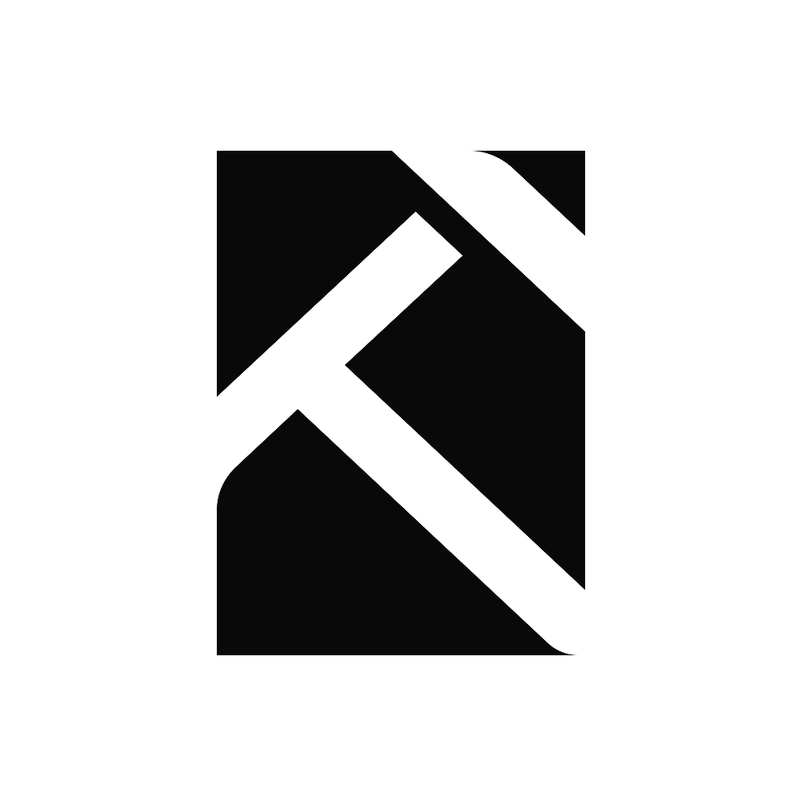
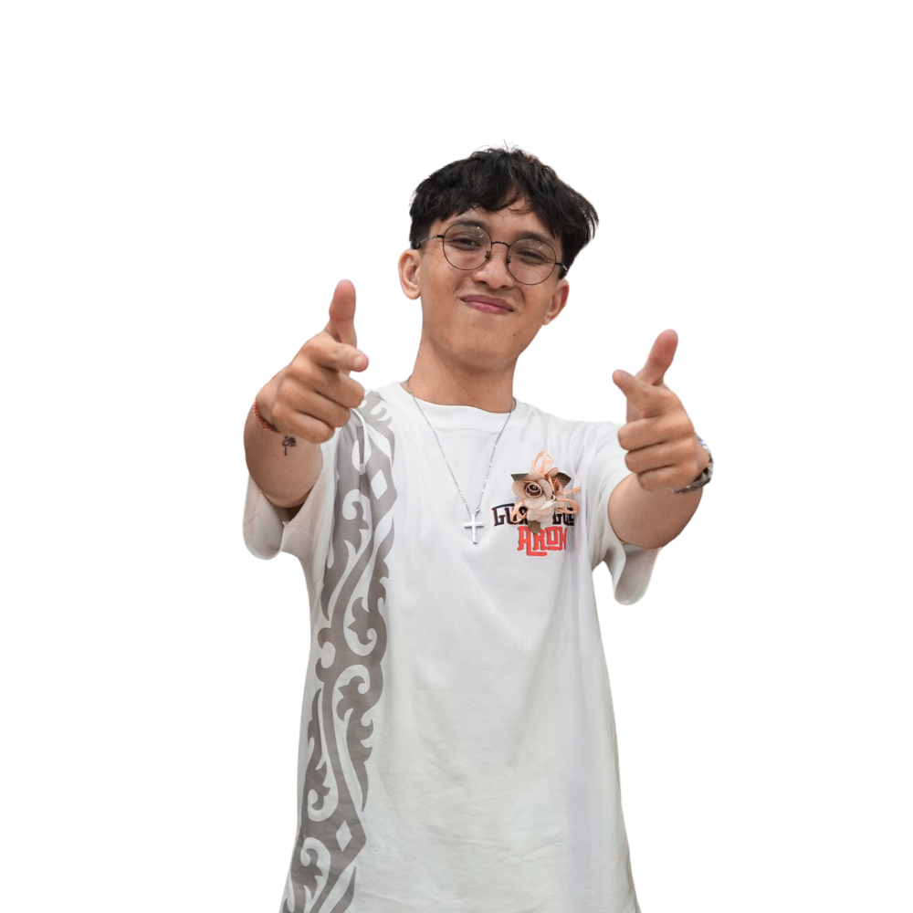
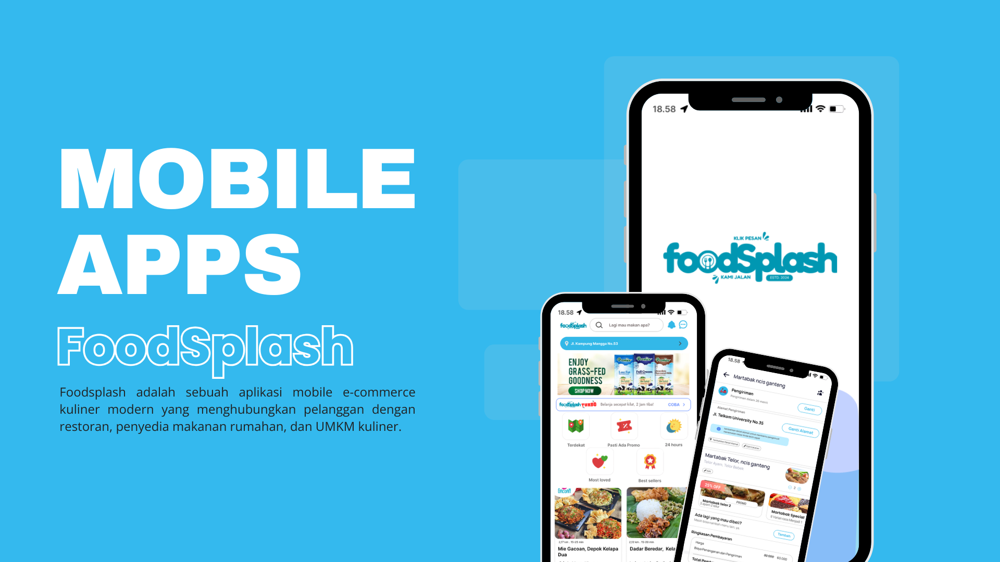

Welcome To KUTANARILENS
Halo!
Visual yang bercerita. Estetika yang bermakna.
KutanariLens hadir untuk kamu yang menghargai kualitas visual dengan sentuhan personal. Mari berkolaborasi dan ciptakan sesuatu yang tak terlupakan.

My Projects

FoodSplash
Aplikasi pesan antar makanan lokal berbasis flutter sebagai frontend, dan laravel sebagai backend.
Lihat Selengkapnya